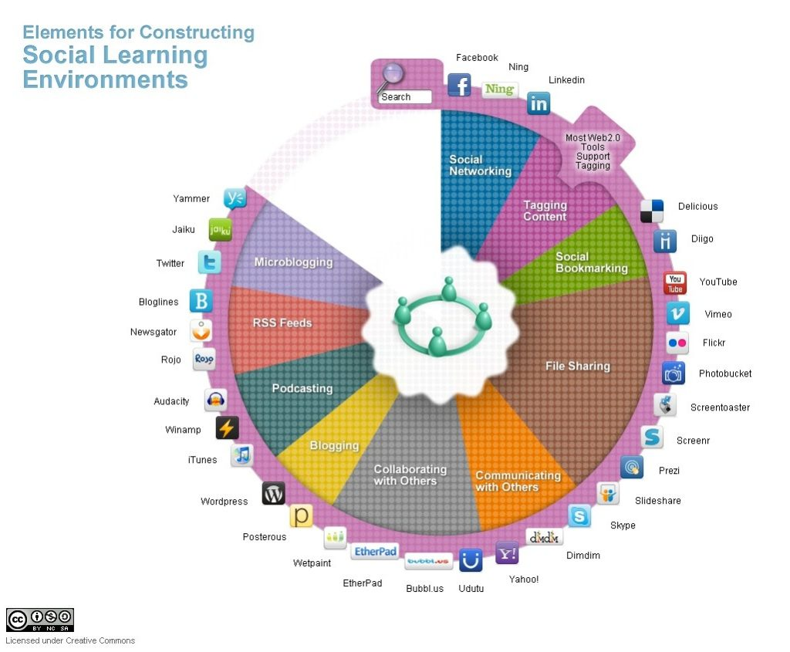

8.6 Mídias sociais


Imagem: © Abhijit Kadle, Upside Learning, 2010

Embora as mídias sociais sejam prioritariamente baseadas na internet e, por conseguinte, constituam uma subcategoria da computação, existem diferenças significativas entre a utilização educacional das mídias sociais e a aprendizagem baseada no computador ou a aprendizagem colaborativa on-line que justificam tratar as mídias sociais como um meio autónomo, embora dependam e surjam frequentemente integradas com outras formas de computação. A principal diferença reside no grau de controle sobre a aprendizagem que as mídias sociais oferecem aos estudantes.
8.6.1 O que são mídias sociais?
Por volta de 2005, uma nova gama de ferramentas web começou a generalizar-se e, progressivamente, a encontrar aplicação educativa. Estas podem ser genericamente descritas como mídias sociais, na medida em que refletem uma cultura de utilização da web distinta da antiga lógica de transmissão institucional de "centro-para-periferia". Eis algumas das ferramentas e as suas utilizações (existem muitos outros exemplos possíveis; clique em cada exemplo para ver uma aplicação educacional):

| Tipo de ferramenta | Exemplo | Aplicação |
| Blogs | Online Learning and Distance Education Resources | Permite a um indivíduo efetuar publicações regulares na web, por exemplo, sob a forma de um diário pessoal ou de uma análise de acontecimentos da atualidade. |
| Wikis | UBC’s Math Exam Resources
| Uma publicação coletiva "aberta", que permite a colaboração de várias pessoas na criação ou contributo para um repositório de informação. |
| Redes sociais | Facebook
| Uma ferramenta social que conecta as pessoas com amigos, colegas de trabalho, estudo e interação. |
| Arquivos multimídia |
| Permite aos usuários finais acessar, armazenar, descarregar e partilhar gravações de áudio, fotografias e vídeos. |
| Jogos multijogador |
| Permite aos jogadores competirem ou colaborarem entre si ou com terceiros representados pelo computador, geralmente em tempo real. |
| Aprendizagem móvel | Celulares e aplicativos (apps), por exemplo: Soil TopARgraphy | Permite aos usuários acessar múltiplos formatos de informação (voz, texto, vídeo, etc.) em qualquer momento e local. |
Figura 8.6.2 Exemplos de mídias sociais (adaptado de Bates, 2011, p.25)

A principal característica das mídias sociais consiste em permitirem ao usuário final acessar, criar, disseminar e partilhar informações facilmente num ambiente de utilização simples e aberto. Geralmente, o único custo direto é o tempo do próprio usuário. Existem frequentemente poucos controles sobre os conteúdos, além dos normalmente impostos pelos Estados ou governos (como no caso da difamação ou da pornografia). Uma característica destas ferramentas reside em capacitar o usuário final — o aprendiz ou o cliente — a gerir os seus dados (como no banco on-line) e a constituir redes pessoais (por exemplo, através do Facebook). Por estas razões, há quem tenha designado as mídias sociais como a "democratização" da web, embora, ao mesmo tempo, se possa argumentar que as mídias sociais se encontram hoje fortemente mercantilizadas através da publicidade.
De modo geral, as ferramentas de mídias sociais assentam em programas de software muito simples, com poucas linhas de código. Consequentemente, surgem constantemente novas ferramentas e aplicativos (apps), e a sua utilização é gratuita ou de custo muito reduzido. Para uma boa visão geral e ampla sobre a utilização das mídias sociais na educação, ver Lee e McLoughlin (2011).
8.6.2 Affordances gerais das mídias sociais
O conceito de "affordances" (possibilidades) é frequentemente utilizado nas discussões sobre mídias sociais. McLoughlin & Lee (2011) identificam as seguintes affordances associadas às mídias sociais (embora usem o termo web 2.0) em geral:
- conectividade e relação social;
- descoberta e partilha colaborativa de informações;
- criação de conteúdos;
- agregação de conhecimentos e informações e modificação de conteúdos.
No entanto, torna-se necessário especificar de forma mais direta as características pedagógicas únicas das mídias sociais.
8.6.3 Características de apresentação
As mídias sociais permitem:
- comunicação multimídia em rede entre grupos de aprendizes auto-organizados;
- acesso a conteúdos multimídia ricos disponíveis na internet em qualquer momento ou local, desde que exista uma ligação adequada à rede;
- materiais multimídia criados pelos próprios aprendizes;
- oportunidades para alargar a aprendizagem para além de disciplinas fechadas e das fronteiras institucionais.
8.6.4 Desenvolvimento de competências
As mídias sociais, quando devidamente integradas num referencial pedagógico, conseguem apoiar o desenvolvimento das seguintes competências (clique em cada uma para ver exemplos):
- literacia digital: este site foi desenhado pela Biblioteca da Universidade da Colúmbia Britânica para permitir aos estudantes gerirem a sua identidade digital;
- aprendizagem autônoma e autogerida: trata-se de uma Wiki construída por estudantes de pós-graduação em matemática da UBC para apoiar os alunos de licenciatura na preparação para os exames;
- colaboração/aprendizagem colaborativa/trabalho em equipe: este consistiu num projeto letivo para criar artigos na Wikipédia sobre literatura latino-americana por uma turma de licenciatura do terceiro ano da UBC;
- internacionalização/formação de cidadãos globais;
- trabalho em rede (networking) e outras competências interpessoais;
- gestão do conhecimento: os estudantes da UBC utilizam as mídias sociais para investigar tecnologias emergentes e estruturar um modelo de negócio educativo em torno destas tecnologias;
- tomada de decisões em contextos específicos (por exemplo, gestão de emergências, aplicação da lei).
8.6.5 Pontos fortes e limitações das mídias sociais
Apresentam-se algumas das vantagens das mídias sociais:
- podem revelar-se extremamente úteis para desenvolver algumas das competências essenciais necessárias na era digital, tais como as competências de comunicação digital;
- permitem aos professores definir trabalhos de grupo on-line, baseados em casos ou projetos, e os estudantes podem recolher dados no terreno recorrendo a mídias sociais através de celulares ou iPads;
- os aprendizes podem submeter trabalhos ricos em mídias, individualmente ou em grupo;
- estes trabalhos, quando avaliados, podem ser integrados pelo aluno no seu próprio ambiente de aprendizagem pessoal ou e-portfólio para utilização futura no mercado de trabalho ou no ingresso em pós-graduações;
- os aprendizes conseguem assumir maior controle sobre a sua própria aprendizagem, como verificamos nos MOOCs conectivistas no Capítulo 5, Seção 3.2;
- através da utilização de blogs e wikis, as disciplinas e a aprendizagem podem abrir-se ao mundo exterior, enriquecendo e diversificando as perspectivas em análise.
No entanto, muitos estudantes não constituem, pelo menos na fase inicial, aprendizes autónomos (ver Candy, 1991). Muitos alunos chegam a uma atividade de aprendizagem sem dispor das competências ou da confiança necessárias para estudar de forma independente a partir do zero (Moore e Thompson, 1990). Necessitam de apoio estruturado, conteúdos selecionados e organizados, e de certificação reconhecida. O aparecimento de novas ferramentas que conferem aos estudantes maior controle sobre o seu estudo não elimina necessariamente a necessidade de uma experiência educativa estruturada. Contudo, os aprendizes podem desenvolver as competências necessárias para se tornarem alunos autónomos (Moore, 1973; Marshall e Rowland, 1993). As mídias sociais conseguem tornar a aprendizagem do "aprender a aprender" muito mais eficaz, mas na maior parte dos casos ainda dentro de um ambiente estruturado de início.
A utilização das mídias sociais levanta a inevitável questão da qualidade. De que forma podem os aprendizes distinguir a informação confiável, rigorosa e fidedigna de informações erradas, tendenciosas ou sem fundamento, se forem incentivados a explorar livremente a rede? Quais as implicações para a especialização e o conhecimento especializado quando qualquer pessoa pode emitir opinião sobre tudo? Como observou Andrew Keen (2007), "estamos substituindo a tirania dos especialistas pela tirania dos idiotas". Nem todas as informações são equivalentes, nem todas as opiniões.
Estes constituem desafios fundamentais para a era digital; no entanto, além de fazerem parte do problema, as mídias sociais podem também constituir parte da solução. Os professores podem conscientemente utilizar as mídias sociais para o desenvolvimento da gestão do conhecimento e para promover o uso responsável destas mídias, mas o desenvolvimento de tais conhecimentos e competências exigirá um ambiente com apoio docente. Muitos estudantes procuram estrutura e orientação na sua aprendizagem, competindo aos professores fornecê-la. Necessitamos, por conseguinte, de encontrar um equilíbrio entre a autoridade e o controle totais do professor e a anarquia completa das crianças abandonadas à sua sorte numa ilha deserta no romance "O Senhor das Moscas" (Golding, 1954). As mídias sociais viabilizam esse equilíbrio intermédio, mas apenas se, enquanto professores, dispusermos de uma pedagogia ou filosofia educativa clara para orientar as nossas escolhas e a utilização desta tecnologia.
Para mais informações sobre mídias sociais, ver o Capítulo 9, Seção 8.
Referências
Bates, T. (2011) ‘Understanding Web 2.0 and Its Implications for e-Learning’ in Lee, M. and McCoughlin, C. (eds.) Web 2.0-Based E-Learning Hershey NY: Information Science Reference
Candy, P. (1991) Self-direction for lifelong learning San Francisco: Jossey-Bass
Golding, W. (1954) The Lord of the Flies London: Faber and Faber
Keen, A. (2007) The Cult of the Amateur: How Today’s Internet is Killing our Culture New York/London: Doubleday
Lee, M. and McCoughlin, C. (eds.) Web 2.0-Based E-Learning Hershey NY: Information Science Reference
Marshall, L. and Rowland, F. (1993) A Guide to learning independently Buckingham UK: Open University Press
McCoughlin, C. and Lee, M. (2011) ‘Pedagogy 2.0: Critical Challenges and Responses to Web 2.0 and Social Software in Tertiary Teaching’, in Lee, M. and McCoughlin, C. (eds.) Web 2.0-Based E-Learning Hershey NY: Information Science Reference
Moore, M. (1973) Toward a Theory of Independent Learning and Teaching, Journal of Higher Education, Volume 44, No. 9
Moore, M. and Thompson, M. (1990) The Effects of Distance Education: A Summary of the Literature University Park, PA: American Center for Distance Education, Pennsylvania State University
Atividade 8.6 Identificando as características pedagógicas únicas das mídias sociais
- Escolha uma das suas disciplinas e analise de que forma as mídias sociais poderiam ser utilizadas nela. Em particular:
- quais novos resultados de aprendizagem a utilização das mídias sociais poderia ajudar a desenvolver?
- seria preferível simplesmente adicionar as mídias sociais à disciplina ou redesenhá-la inteiramente em torno destas mídias?
- Apresentei apenas uma lista sumária das características pedagógicas únicas das mídias sociais. Consegue pensar noutras características que não tenham sido abordadas nesta seção?
- De que forma este capítulo influencia as suas visões sobre o fato de os estudantes trazerem os seus próprios dispositivos para a sala de aula?
- Você mantém ceticismo relativamente ao valor das mídias sociais na educação? O que identifica como os seus aspectos negativos?
Para feedback sobre algumas destas questões e considerações gerais sobre as mídias sociais na educação, clique no podcast abaixo:
Um elemento de áudio foi excluído desta versão do texto. Você pode ouvi-lo on-line aqui: https://pressbooks.bccampus.ca/teachinginadigitalagev2/?p=213